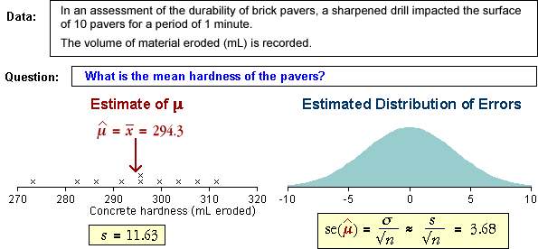

| standard error = σerror = |
Using an estimate of σ
The error distribution for a sample mean has:
error = μerror = 0
| standard error = σerror = |
In practice, the value of σ is usually unknown and must be replaced by the sample standard deviation, s, in the formula:
| standard error = σerror = |
Example
